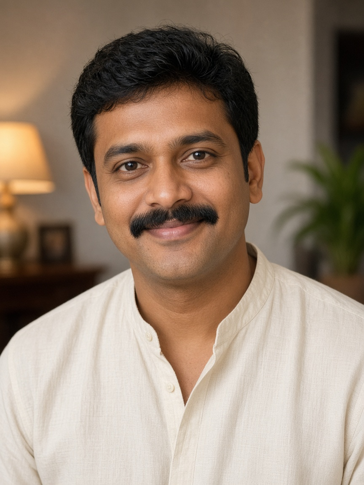

From the courtyard
“Our families had never sat in the same marriage hall before. Tamil Friendly Matrimony did not ask us to erase where we came from. It only asked us to meet.”
தமிழ் இந்து திருமணம் · every caste welcome
Tamil Friendly Matrimony
Two people step closer. A wedding begins.
Tamil Friendly Matrimony is a courtyard for Hindu families — Iyer and Iyengar, Mudaliar and Nadar, Chettiar, Gounder, Vanniyar, Thevar, Devendrakula Vellalar, and every community that prays in Tamil. No door is closed.
52,000+ Tamil Hindu profiles · 140+ communities · one equal search
A full courtyard
Many profiles. The same warm light on every face.
Doctors in Madurai, engineers in Coimbatore, dancers in Thanjavur, chefs in Singapore. Search by age, city, profession, or your own community — or leave caste open and meet the person the family actually likes.
Meera S.
Iyer · open to all Hindu communities
Divya R.
Kongu Vellalar · family in Tiruppur
Anitha K.
Pillai · temple town roots
Arjun V.
Nadar · Chennai family

Karthik M.
Gounder · welcomes every caste
Vignesh P.
Mudaliar · visits Trichy often
These six faces are illustrated samples of the profiles families browse here.
Your tradition, kept
Write your caste, kulam, and hometown the way your elders say them. The search understands Tamil Hindu life, including horoscope and wedding customs.
No community left outside
A profile is never hidden because of caste. Families who want a match inside their community can filter. Families who want a wider door can leave it open.
Elders stay in the room
Parents can follow the search. Introductions are calm, named, and reversible. The couple still gets a private word before anyone books a muhurtham.
All castes. Equal standing.
ஒரே மரியாதை. எல்லா ஜாதியும்.
Tamil Friendly Matrimony was made so a Tamil Hindu wedding does not begin with a closed list. Brahmin, non-Brahmin, landowning communities, weaving communities, and communities that were kept at the edge of older matrimony offices — they share this kolam.
- Iyengar
- Iyer
- Mudaliar
- Pillai
- Nadar
- Nagarathar
- Naidu
- Gounder
- Kongu Vellalar
- Vanniyar
- Thevar
- Sengunthar
- Devanga
- Vishwakarma
- Yadav
- Reddiar
- Adi Dravidar
- Devendrakula Vellalar
- And the community you did not see listed
A gentle order
From first look to the first family call.
-
01
Set the lantern down
Create a profile in Tamil or English. Add community, education, city, and what your family hopes for. Photos stay private until you choose otherwise.
-
02
Walk the kolam
Browse thousands of profiles. Narrow by community when that matters, or keep every Hindu caste in view. Shortlist the ones that feel like home.
-
03
Let the families speak
Send a named interest. If both sides agree, a phone call is opened. The rest — temple, match day, payasam — belongs to your people.
Come in
Put your family’s name on the courtyard wall.
Tell us who you are looking for. Request a call opens WhatsApp with what you typed, on the same number as friendlymatrimony.com.
WhatsApp +91 63811 62823 · same line as Friendly Matrimony